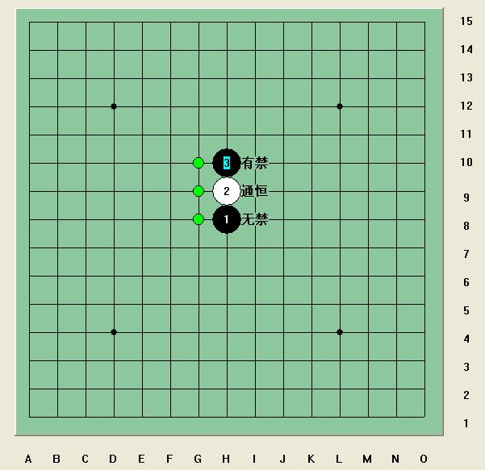
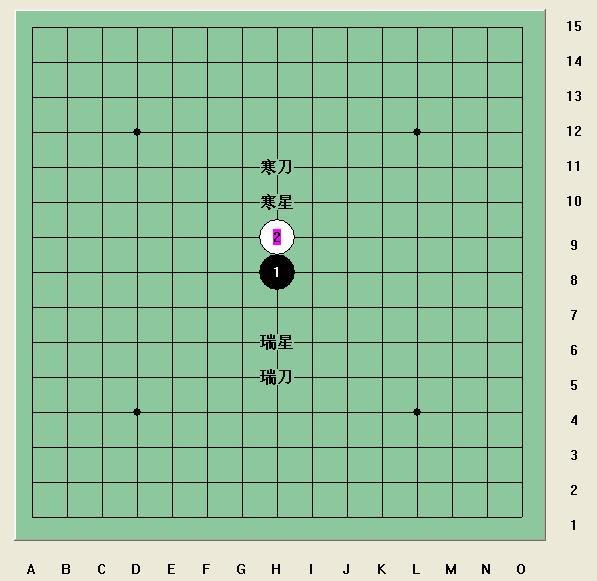
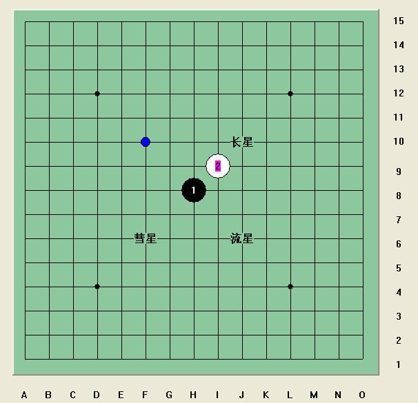
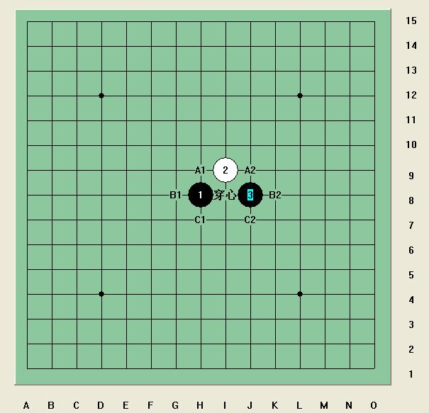
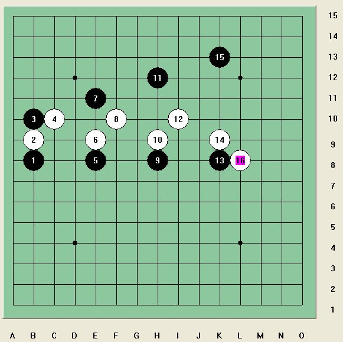
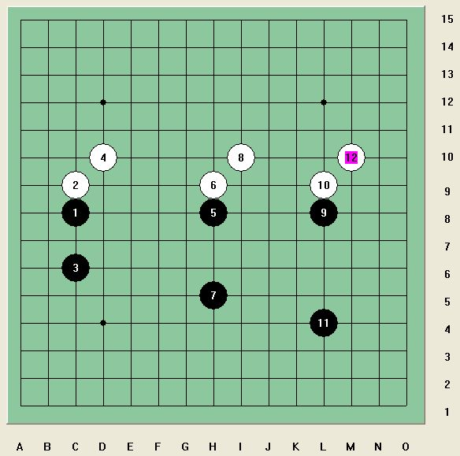

寒星白4最强防引发的血案
#1 寒星白4最强防引发的血案 作者：岳麓小棋后 发表时间：2009-3-24 17:26:02
不好表述，当抛砖引玉吧。
故事的开始，当然是从一个小疑惑开始的。小棋后我是从无禁出身的，自小在无禁打滚，初来有禁、RIF自然是有诸多困惑。
比如寒星白4最强防的选择，如图。

其最强防有I8、I9、I10三个。其中I9的强防通恒星，G9、J9为常见必胜点，首先予以排除。
有意思的是I8和I10这两个强防点，有点小区别，你看出了吗？
和云雨月有旁端移位问题造成的一些点胜法差异一样，如果棋盘是足够大的，那么这两个防点是对称的，其实是无差别的，但是由于棋盘空间的限制，这两个强防点产生了很多差别，并开始折磨你的神经，如果是你，你会选哪个强防点？
以前在无禁混的时候，最常下的是I8位的防点，一度认为，这个金星位白4应该是最顽强的，当时的考虑是与其选I10的白4不如选I8的白4来的实在，毕竟一眼看过去I8的白4占的空间更开阔，一旦抢先，后坐力更好。
来到有禁，学了一点RIF的皮毛后，发现公认寒星最强白4防居然在I10，于是一系列嘀咕开始犯了。为什么？
我们来重温下极限辐射说的内容，如下图。

在直止2的阻挡下，寒星一二打黑都必胜了，瑞星一打黑必胜，二打平衡；再往外一格，寒星刀二打黑小优，瑞星刀二打却已经是白必胜了。承接极限辐射说内容：
白2的阻挡让黑1的辐射力量发生改变，不再是上下均等的，大致是黑1上半区的辐射比对称区域下半区的辐射要强点。也就是说以天元黑1为中心黑3往上走，黑优势下降的速度比较慢点。
我们知道，五子棋的防守其实是一种跟随贴近的防守，你要发展的点必然是我要限制的点。
从这个观点出发来看寒星白4最强防的选择就很好理解了，黑方在上部密集，最强防必然是要往上贴同时和白2联系紧密的I10点。
现在我们来看斜止2演变规律：

彗星黑必败不用说了，流星二打和长星二打就有意思了，根据经验和研究，流星二打白的优势应该比长星大，流星白的优势相对集中，可以预见相对于长星，流星更容易被终结掉。斜止2下，相同半径，黑3朝顺时针方向走，棋型优势逐渐减弱。
以此我们来看下恒星的白4防。

恒星大致有这些常见强防点，其中的穿心强防我就不说了，看下其他3对看起来“对称”的防点，和寒星那对强防有共通之处吧。这样我们就很好判断了，A1和A2比，A2防点强点；C1和C2比，C2防点强点；B1和B2比，B2防点强点？
错了，这会是B1强点。B1压缩空间的能力更强，抢占的空间也更多。B1和B2这对防点和寒星那对防点还是有点差别的，以黑1和黑3划一条线，B1B2这对防点不在线的一侧，这个时候只存在单纯的空间打压问题。这种解释会不会遭到臭鸡蛋？也没去实践，权当一家之言听吧。

最强白4“回头”了，随着黑3的远离，黑1和黑3的组合优势逐渐淡弱，辐射力量构不成威胁，这个时候白4只需抢占空间——回头到I8即可。
再看瑞星变化

从上面的观点可以看出，黑1和黑3若有辐射优势存在，白4必然要跟着打压这股辐射优势，但是从瑞星的实践情况来看，白4并不是跟着
#2 Re:寒星白4最强防引发的血案 作者：茗弈总监 发表时间：2009-3-24 17:29:33
超级强
#3 Re:寒星白4最强防引发的血案 作者：小枫叶 发表时间：2009-3-24 17:31:43
呵呵，学习中，看得不太懂呀！
#4 Re:寒星白4最强防引发的血案 作者：红豆 发表时间：2009-3-24 17:41:50
学习就是字的颜色浅了！看着费劲
#5 Re:寒星白4最强防引发的血案 作者：中大五子风 发表时间：2009-3-24 17:47:23
我也来学习学习。感觉有道理#6 Re:寒星白4最强防引发的血案 作者：梦醉南天 发表时间：2009-3-24 18:04:14
不大明白， ，呵呵
，呵呵
#7 Re:寒星白4最强防引发的血案 作者：无解 发表时间：2009-3-24 18:08:06
恩 确实变通的地方很多但是这需要的知识就多啦 要对多方面的开棋有深入的了解 还要精通棋理不然很难和你产生共鸣呀
［本站用户 茗弈小刀 于 2009-3-24 22:37:43 花5个金币送您鲜花一朵］
#8 Re:寒星白4最强防引发的血案 作者：弱小的无尾猫 发表时间：2009-3-24 18:28:28
顶！！！很有道理！我也思考过这个问题，这个问题值得继续深入研究！比如加入更多的约束条件：边角局面，简单的定式局面，必胜型与防守唯一点的研究都可以融入进去。我想深入研究以后对我们棋艺的理解一定会上一个新的台阶：）
［本站用户 茗弈小刀 于 2009-3-24 22:37:12 花5个金币送您鲜花一朵］
［本站用户 茗弈总监 于 2009-3-25 7:59:39 花5个金币送您鲜花一朵］
#9 Re:寒星白4最强防引发的血案 作者：茗弈小刀 发表时间：2009-3-24 18:30:25
妹妹果然雷厉风行,中午说在写文章下午就写好了！妹妹，你----是大家的骄傲！这篇文章首先是这个名字，哈哈！“血案”充满悬疑，引人入胜。内容新颖，主题明确，配图说明，一目了然。不得不承认，妹妹这篇文章比前二篇有上了一个台阶，这说明妹妹在不断总结提高，值得我们大家学习！小棋后！为你喝彩！［本站用户 茗弈总监 于 2009-3-25 8:00:11 花5个金币送您鲜花一朵］
#10 Re:寒星白4最强防引发的血案 作者：飞哥 发表时间：2009-3-24 18:34:59
岳飞英明再现
麓山枫叶红遍
小楼深处奇女
棋坛高谈阔见
后浪必推前浪
好恋五目不倦
刀刀这首写给小棋后的藏头诗太贴切了！
#11 Re:寒星白4最强防引发的血案 作者：茗奕的飞猪 发表时间：2009-3-24 18:41:45
好文才！顶你，没商量！
#12 Re:寒星白4最强防引发的血案 作者：茗弈真实的谎言 发表时间：2009-3-24 18:44:49
感谢爱五子网站给大家提供学习交流的氛围！感谢岳麓小棋后老师！期待更多好文章与大家分享！前进----是没有终点的！！加油！！！［本站用户 茗弈小刀 于 2009-3-24 22:38:28 花5个金币送您鲜花一朵］
#13 Re:寒星白4最强防引发的血案 作者：淡月疏星 发表时间：2009-3-24 18:48:48
好文章，学习了！#14 Re:寒星白4最强防引发的血案 作者：琦玉 发表时间：2009-3-24 18:50:39
 亲爱的你太棒了！
亲爱的你太棒了！
#15 Re:寒星白4最强防引发的血案 作者：丑小鸭 发表时间：2009-3-24 18:52:57
 悬疑推理恐怖棋解！
悬疑推理恐怖棋解！
#16 Re:寒星白4最强防引发的血案 作者：独爱五子连珠 发表时间：2009-3-24 18:56:34
学习了，谢谢老师！#17 Re:寒星白4最强防引发的血案 作者：海湾浪琴 发表时间：2009-3-24 19:00:38
阿姨好！干妈叫我来看你的文章了，虽然看不太懂，但干妈叫我复制到我的博客里，也欢迎阿姨来我的博客。罗罗向阿姨致敬！#18 Re:寒星白4最强防引发的血案 作者：南京小飞机 发表时间：2009-3-24 19:00:57
每次看你的文章总感觉很强势！完全一老师的形象
#19 Re:寒星白4最强防引发的血案 作者：坏蛋色色色 发表时间：2009-3-24 19:07:51
 好文章！顶起！！！！！！！！！！！！！！！
好文章！顶起！！！！！！！！！！！！！！！
#20 Re:寒星白4最强防引发的血案 作者：百医天使 发表时间：2009-3-24 19:11:00
硬 是没太看懂，我本以为，你能把强四终结了呢，最少有个思路吧，没想到说是这个强四呀
#21 Re:寒星白4最强防引发的血案 作者：梦在哪 发表时间：2009-3-24 19:16:02
谢谢老师，学到很多东西和棋理。#22 Re:寒星白4最强防引发的血案 作者：二十七刀 发表时间：2009-3-24 19:18:19
惊天动地地血案
#23 Re:寒星白4最强防引发的血案 作者：行云流水 发表时间：2009-3-24 19:34:43
看了，不知所云。汗#24 Re:寒星白4最强防引发的血案 作者：刀魂 发表时间：2009-3-24 19:41:04
敢问 LZ 这是 什么软件啊，我好喜欢哦。。。哪里 可以搞到这么好的 软件的啊？？？#25 Re:寒星白4最强防引发的血案 作者：老黄 发表时间：2009-3-24 19:42:22
很有想法，支持
#26 Re:寒星白4最强防引发的血案 作者：妙玉偷星 发表时间：2009-3-24 20:00:06
很好，很强大，我也比较喜欢这类文章，嘻嘻，以后还向你请教。#27 Re:寒星白4最强防引发的血案 作者：习惯下棋的时候抽烟 发表时间：2009-3-24 20:10:00
刀刀叫我来现场破这个血案，什么情况？容我看看再作回答。。。。。。#28 Re:寒星白4最强防引发的血案 作者：雨还在下 发表时间：2009-3-24 20:17:16
很新颖，学习了。#29 Re:Re:寒星白4最强防引发的血案 作者：一个人流浪 发表时间：2009-3-24 20:27:20
引用：同感，深深感谢！
原文由 茗弈真实的谎言 发表于 2009-3-24 18:44:49 :
感谢爱五子网站给大家提供学习交流的氛围！感谢岳麓小棋后老师！期待更多好文章与大家分享！前进----是没有终点的！！加油！！！
#30 Re:寒星白4最强防引发的血案 作者：一个人流浪 发表时间：2009-3-24 20:35:54
#31 Re:寒星白4最强防引发的血案 作者：无尽 发表时间：2009-3-24 20:52:48
辐射是在比喻意义上的、形象化的一种模糊表述，本质上其实就是棋型构二拓展能力与先手牵制的问题。［本站用户 茗弈小刀 于 2009-3-24 22:35:53 花5个金币送您鲜花一朵］
#32 Re:寒星白4最强防引发的血案 作者：nara 发表时间：2009-3-24 21:11:48
岳麓小棋后,来学习了!
#33 Re:寒星白4最强防引发的血案 作者：岳麓小棋皇 发表时间：2009-3-24 22:08:14
#34 Re:寒星白4最强防引发的血案 作者：掌棋盟天地一沙鸥 发表时间：2009-3-24 22:36:13
学习了 不过不是太明白 呵呵
［本站用户 茗弈小刀 于 2009-3-24 22:41:06 花5个金币送您鲜花一朵］
#35 Re:寒星白4最强防引发的血案 作者：米兰 发表时间：2009-3-24 23:00:39
好文章。非常有个性，顶［本站用户 茗奕的飞猪 于 2009-3-25 10:23:48 花5个金币送您鲜花一朵］
#36 Re:寒星白4最强防引发的血案 作者：高星 发表时间：2009-3-25 8:12:11
虽然看不太懂，但觉得有道理顶！
#37 Re:Re:寒星白4最强防引发的血案 作者：茗奕的飞猪 发表时间：2009-3-25 10:23:24
引用：支持米兰老师的看法，赞同米兰老师的观点！也期待米兰老师更多精品出笼！！
原文由 米兰 发表于 2009-3-24 23:00:39 :
好文章。非常有个性，顶
#38 Re:寒星白4最强防引发的血案 作者：就是爱玩 发表时间：2009-3-25 21:37:48
确实长了见识。#39 Re:寒星白4最强防引发的血案 作者：茗弈真实的谎言 发表时间：2009-3-26 10:26:24
刀刀叫我来取证来了。
#40 Re:寒星白4最强防引发的血案 作者：木木夕 发表时间：2009-3-26 19:07:39
哈哈，好玩！
#41 Re:寒星白4最强防引发的血案 作者：雅匪 发表时间：2009-3-26 20:36:33
先不管对错，能将“不好表述”的东西“表述”出来，本身就已经不是一般人可以做到的了
希望能看到楼主更多的学术文章
#42 Re:寒星白4最强防引发的血案 作者：雅轩流星 发表时间：2009-3-27 11:36:45
“岳麓”，难道是长沙的？#43 Re:寒星白4最强防引发的血案 作者：岳麓小棋后 发表时间：2009-3-27 21:23:28
这两个真假松三也和寒星这对白4防一样的道理
#44 Re:寒星白4最强防引发的血案 作者：五步之道 发表时间：2009-3-28 19:12:08
不怎么明白 。。。#45 Re:寒星白4最强防引发的血案 作者：雅典娜 发表时间：2009-3-31 8:02:23
确实好强,支持小棋后
#46 Re:Re:寒星白4最强防引发的血案 作者：吃大米饭的鱼 发表时间：2009-4-1 12:15:47
看名字够吓人的#47 Re:寒星白4最强防引发的血案 作者：阔哥 发表时间：2009-4-1 13:00:41
xue xixuexi#48 Re:Re:寒星白4最强防引发的血案 作者：茗弈真实的谎言 发表时间：2009-4-2 9:54:33
引用：
原文由 雅匪 发表于 2009-3-26 20:36:33 :先不管对错，能将“不好表述”的东西“表述”出来，本身就已经不是一般人可以做到的了
希望能看到楼主更多的学术文章

#49 Re:寒星白4最强防引发的血案 作者：淡月疏星 发表时间：2009-4-2 13:15:08
小棋后很有思想和才气！#50 Re:寒星白4最强防引发的血案 作者：坏蛋色色色 发表时间：2009-4-2 14:36:43
 好恐怖的血案！
好恐怖的血案！
#51 Re:寒星白4最强防引发的血案 作者：木木夕 发表时间：2009-4-3 9:27:40
 案情有进展没？
案情有进展没？
#52 Re:寒星白4最强防引发的血案 作者：天逸乄西西 发表时间：2009-4-3 23:36:04
请作者加群:27122239
(加群时请说明是参赛者,谢谢)
爱五子棋网-原创文学活动宣
2009年4月3日
#53 Re:寒星白4最强防引发的血案 作者：木木夕 发表时间：2009-4-4 9:24:46
小棋后加油！
#54 Re:寒星白4最强防引发的血案 作者：茗弈真实的谎言 发表时间：2009-4-4 20:30:21
加油！！！！！！！！！！！！！！！！#55 Re:寒星白4最强防引发的血案 作者：静待花开 发表时间：2009-4-10 14:25:34
 太恐怖了，小棋后老师联想也太丰富,HA HA .
太恐怖了，小棋后老师联想也太丰富,HA HA .
#56 Re:寒星白4最强防引发的血案 作者：丑小鸭 发表时间：2009-4-10 16:57:36
案子破了没？小棋后师傅我来了。
#57 Re:寒星白4最强防引发的血案 作者：醉了 发表时间：2009-4-11 11:42:58
哈哈！题目真好！文章也精彩！
#58 Re:寒星白4最强防引发的血案 作者：岳麓小棋后 发表时间：2009-10-27 17:00:04
现在看来本文硬伤颇多，算是早期学五子棋棋商幼稚的见证吧#59 Re:寒星白4最强防引发的血案 作者：刀魂 发表时间：2009-10-27 17:13:46
请后面的保持队形！！！
顶
雯顶
刀魂顶
舍露里顶
有志青年顶
岳麋小棋后顶
W D 1 9 9 8 顶
#60 Re:寒星白4最强防引发的血案 作者：踏雪小子 发表时间：2009-10-27 17:28:52
寒星本身就是很复杂的。尤其是燕阵。只不过寒星为黑大优的开局，很多人不屑于研究它。能真正的了解和能够研究透寒星的人很少的。能够真正坚持研究寒星的人也是少。最近也听说寒星2打有地毯了。